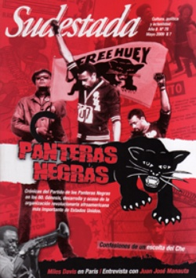

Buscar
Mozo, hay un mosquito en mi campaña
Las redacciones de los grandes medios están bien protegidas. Allí, son inmunes a todo. Sobre todo, a la realidad. Allí, por suerte para ellos, el mosquito no entra. Por eso, en definitiva, el dengue es noticia sólo cuando preocupa a los correctos ciudadanos de la Gran Ciudad. Puede estar arrasando con la salud de miles de seres humanos en el resto de las provincias, pero ya se sabe. Es otro país.
Edición N° 78
Mayo 2009
Revista bimensual
Comprar edición impresaSumario
- Panteras Negras: de Malcolm X a la revolución
- Mozo, hay un mosquito en mi campaña
- De regreso a Cunco
- Miles Davis en París
- Alberto Castellanos, el escolta del Che
- Juan José Manauta
Compartir Articulo
El país de los pobres, esos que solo son noticia cuando se mueven o se mueren en masa. El mosquito tampoco entra, claro, a los despachos de funcionarios y candidatos. Todos ellos, también, están inmunizados. Desde su bunker, dibujan un discurso que nadie cree mientras se disputan a codazos un lugar en cualquier lista. Esperan, impacientes, el cobro de favores sindicalistas bien alimentados, caudillos rastreros, punteros fieles y becados que nadie sabe qué autoridad tienen para sentarse en una banca y cobrar todos los meses un generoso aporte. Se saben a salvo; por eso, aunque trastabillen, pueden marcar sin avergonzarse la diferencia entre "brote" y "epidemia", pueden ocultar casos incómodos, pueden ordenar fumigar solo los barrios de alta alcurnia, pueden maniobrar la retórica para jamás mencionar que en Argentina mueren 8 chicos por día a causa de enfermedades relacionadas con la desnutrición, que los enfermos de chagas son más de 2 millones y que hay 11.000 habitantes por año que padecen tuberculosis (y 800 de ellos mueren a causa de esta enfermedad). ¿En qué discurso, usted, amigo lector, escuchó alguna vez que en nuestro país hay 5 millones de chicos menores de 17 años que son pobres y casi 2 millones que son indigentes? ¿En qué cartel de campaña se lee que la mortalidad infantil en Formosa es del 24,2 (casi el mismo índice que Cabo Verde y Honduras)? ¿En qué país queda Formosa para estos señores?
Por suerte, las redacciones están blindadas. La Casa Rosada, los centros de campaña, las dependencias, los countries, estancias y torres con seguridad privada, también. ¿No salieron a la calle los vecinos de Palermo a exigir una campaña nacional contra el dengue? ¿Y los estancieros mediáticos no están preocupados por los sueldos de miseria de los peones, por el trabajo en negro masivo, por las enormes carencias sociales? ¿Y los funcionarios del aparato peronista (ese que cada tanto se recicla, baraja las cartas y se reparte oficialismo y oposiciones de derecha y hasta de izquierda), hoy en el gobierno, por qué no explican por qué la tasa de mortalidad infantil creció del 12,9 de 2006 al 13,3 de 2007? ¿Por qué no hay discursos que permitan comprender la razón por la cual se le paga al FMI una deuda inmoral mientras el hambre corroe la infancia de millones de chicos? ¿No llegaron al gobierno de la mano del mismo caudillo corrupto -y a partir de sus prácticas punteriles y clientelares- que ahora señalan como conspirador en las sombras? ¿Y la oposición qué dice, además de saludar como "Padre de la Democracia" a un símbolo del político burgués rosquero, capitulador y genuflexo, que no dudó en claudicar -cobardemente y a espaldas del pueblo- ante los gritos de un puñado de militares trasnochados con la cara pintada y firmar las leyes que dejaron en libertad a cientos de torturadores y asesinos? ¿Dónde estaban los referentes de la oposición y su "Padre de la Democracia" cuando la montada les tiraba los caballos encima a las Madres de Plaza de Mayo en plena Dictadura, cuando perseguía y censuraba, cuando desaparecían 30 mil compañeros?
¿Haciendo campaña?
Por suerte para ellos, la realidad está del lado de afuera de sus blindajes. El problema es que se viene otra Gran Farsa, y deben salir a mostrar algo más que carteles. Esta vez, la molestia es un mosquito. Pero ellos tienen claro cuál es el negocio. Nosotros, embarrados en esta historia, podemos elegir partir de algún lugar. Sabemos que las respuestas nunca llegarán de sus oficinas, de sus redacciones, de sus estancias ni de sus countries. Y que la realidad está en otro lado.
Comentarios

Sudestada
El colectivo de Revista Sudestada esta integrado por Ignacio Portela, Hugo Montero, Walter Marini, Leandro Albani, Martín Latorraca, Pablo Fernández y Repo Bandini.
Articulos más vistos


LIBRERÍA SUDESTADA

Colección infantil

Distribuidora de Libros

Suscripción

Sudestada en URUGUAY

Otros articulos de esta edición
Juan José Manauta
Una infancia marcada por el hambre y la soledad es el territorio por el que transita el autor de un ...
Panteras Negras: de Malcolm X a la revolución
Huey P. Newton es el protagonista de esta historia. Pero también Eldridge Cleaver, Stokely Carmichael, Angela Davis, Mumia Abu-Jamal y ...
Miles Davis en París
Antes de ser el que electrificó el jazz, Miles Davis comandó el quinteto más sublime de su historia, el que ...
Alberto Castellanos, el escolta del Che
Alberto Castellanos peleó en la sierra, fue parte del Pelotón Suicida y chofer y escolta del Che Guevara. Integró el ...
De regreso a Cunco
Después de tres décadas de ausencia, un fotógrafo chileno regresa a su tierra natal, Cunco. A partir de las imágenes, ...